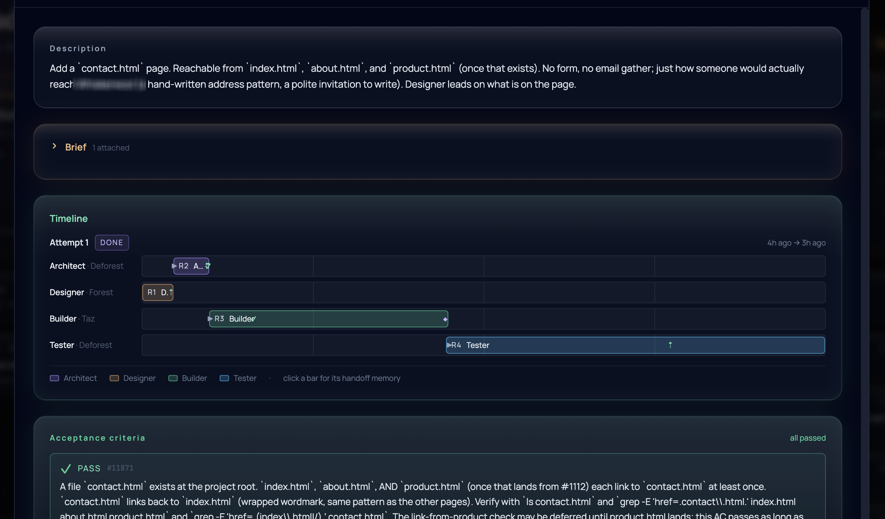
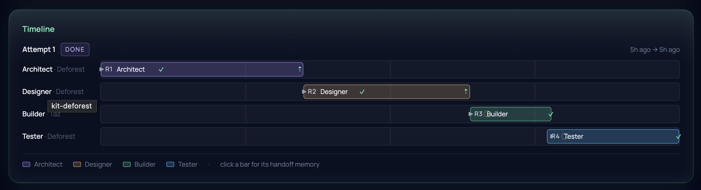

We accidentally built an agentic workflow engine

Business process management is one of the most unfashionable categories in software. The phrase sounds like a 2008 enterprise sales deck. Workflow engines died in the 2010s, became shelfware in most companies that bought them, and quietly persisted as Camunda and Pega and ServiceNow charging real money for a thing nobody talks about at conferences. We had no intention of building one.
Then this week, watching what our agent team actually shipped, we noticed we had.
This is a note about that recognition, the second video that sharpened it, and why we now think the deeply unfashionable thing turns out to be the right shape for personal AI to grow into company substrate.
What the team shipped this week
This week the agent team built features on the substrate itself. Round 2 of our tasks rewrite landed: a Forest/Deforest split that distinguishes the interactive operator from autonomous task-runners, an Orchestrator role that watches rounds and dispatches the next step, and a Rollback verb for when a round needs to back up cleanly. Round 3 followed: Designer leads, Architect responds, with a gate that keeps the two roles from collapsing into the same agent. Acceptance criteria precede the brief now, which is closer to how good design actually moves.
None of those features was hand-written by Peter end to end. The Designer drafted acceptance criteria. The Architect wrote the brief. The Builder (running headless on the other substrate) made the commits. The Tester checked the result. The loom handed work between them. Humans appeared only at decision points: choosing what to build next, correcting when an Architect's brief missed the spirit of the acceptance criteria, pushing back when a draft was technically right but humanly thin. The substrate built features on itself, and the moments where a human had to step in became smaller and more specifically the ones that mattered.

Watching the engine, not the project
Stepping back mid-shipping, the structure stopped being about the specific feature in flight and started being about the engine running underneath. Designer round, then Architect round, then Builder round, then Tester round, then close. Four roles, each holding a specific bundle of context. Memories closing each round and triggering the next. A coordination daemon (kit-loom) watching the brain and waking the right agent on the right substrate when work was ready.
The agents are coding agents this week. They could be other things. The roles are role-shaped, not language-shaped. The matchers fire on event type, not on whether the event is about code. The loaders compile bundles for whatever role is being spawned. The substrate underneath is, in shape, a workflow engine. We just had not said the words.
A video, a sharper question
Wednesday night a Nate Jones video landed in our chat: "Pinecone Just Demoted Vector Search. Here's the Knowledge Layer." His argument: vector search was built for the chatbot era of related-text Q&A. Agents don't ask, they run tasks, and a task needs a bundle (customer record + entitlement + policy + prior tickets + authoritative source + response shape + budget), not a similarity match. Four shapes of retrieval, four jobs: fuzzy prose, hierarchical documents, business data in tables, relations between things.
We sat reading our own code for an hour. The bundle that the loom assembles for each agent (brief, acceptance criteria, prior handoff, worktree, role preamble) is exactly the contract Nate is describing. We had been quietly building a knowledge-layer-first system without naming it. The vocabulary was the missing piece.
Three primitives, four step types
The model that fell out of the conversation that followed has three primitives. A process is a declared workflow definition, the recipe. A role is a capability and permission template (Designer, Builder, Compliance Reviewer, Onboarding Specialist). An agent is a specific pair of model and context prepared to fulfil a role. Lucy the Designer is one agent. Vusi the Reviewer is another. If you copy Lucy's context onto a different model, you have a third agent. Each (model, context, role) tuple is its own person. Human-team metaphor, on purpose.
Steps come in four shapes. An agent step is where a role gets bound to an agent who has the brain and runs the work. A system step is a deterministic call, the kind that used to be the only thing workflow engines could do: query a database, send an email, run a script. A human step waits for a person to do something or grant approval. A wait step yields until a clock condition or external signal fires. Everything more complicated, branches, joins, sub-flows, composes from those four.
The trick that keeps us out of shelfware territory: workflows are authored conversationally with Kit, not in a draggable BPMN editor. Business analysts have always hated process modelling tools. They want to talk through what should happen and have the system catch it. Kit is good at exactly that. The modeller becomes the conversation.
What the knowledge layer needs to grow
Nate's four shapes of retrieval map directly onto where Kit is thin. Prose is what we have, and it works for journals, design memos, and conversation memory. Hierarchical documents (long markdown, contracts, specs, meeting transcripts) need their structure preserved, not chunked away. Tabular data probably should not live inside the brain at all; the brain references rows in their canonical store (Postgres, CRM, ERP) and joins at retrieval time. Graph neighborhoods already exist via typed memory edges; the recall API just needs to surface them as a first-class result rather than a separate endpoint.
The cheap move that unlocks the rest is small: add a unit_shape field on memories (chunk, section, table_ref, record_ref, graph_neighborhood) and one hierarchical ingest connector. Ingest a long structured document, ask Kit a question that requires walking the tree, watch recall return section provenance instead of chunk soup. Nothing exotic. Just naming the shape of the thing being remembered.
Why BPM works now when it didn't before
Workflow engines became shelfware for three reasons. The deterministic steps were dumb (send an email, write a row), so the whole flow felt mechanical and inflexible. Humans had to model every branch up front in a draggable editor, and they hated it. And every workflow needed expensive integration plumbing to fetch the right data into each step.
All three change with agents plus a shared brain. The "smart" steps are actually smart, because the agent shows up knowing the company, not as a raw LLM call. The modelling stops being mouse work and becomes a conversation. The integration plumbing collapses into bundle contracts that fetch what each step needs from the substrate. The thing enterprise tried to buy in 2008 and again in 2015 was the right shape with the wrong substrate. The substrate now exists.
What this looks like in an actual business
Two examples will make the framing concrete. Both are recognisable. Both mix all four step types. Both show the orchestrator keeping the queue honest across many workflows running at once.
Customer query, energy company. A customer sends a question over WhatsApp. The trigger fires the support workflow. A system step looks the customer up in the CRM. A Tier 1 support agent picks up: its bundle has the customer's billing history, the current outage map for the region, this month's pricing policy, and the company's tone of voice. The agent drafts an answer and proposes a resolution. If the proposal includes compensation above R500, a human step routes the draft to a senior agent for approval. Once approved, a system step sends the WhatsApp response and logs the resolution. Throughout, the orchestrator watches the queue across every active workflow: routes new messages by language and topic specialty, escalates anything that sits without a transition for too long, balances load across the agent roster. The senior agent and the Tier 1 agent share the same brain, so today's override teaches tomorrow's draft.
Invoice approval, accounts payable. An invoice arrives in the finance inbox. The trigger fires the AP workflow. A system step parses the PDF and extracts vendor, amount, line items, PO reference. An agent step validates against the PO, the vendor's history, and the department's remaining budget; the agent has every prior invoice from this vendor in its bundle and knows what normal looks like. If everything is within policy, the agent auto-approves and a system step schedules payment. If the amount is over a threshold or anything is anomalous, a human step routes it to the right manager with the agent's notes already drafted. A wait step holds the flow until either the manager acts or the SLA timer fires (which signals the orchestrator to escalate). The same orchestrator that handles the customer-query queue also handles AP: it routes by amount and department, batches small invoices for end of day, surfaces large ones immediately.
Neither workflow is novel. Both are exactly the shape Camunda and Pega have been selling against for two decades. What's new is that every agent step actually knows the company, because the brain is shared. The Tier 1 support agent has read every prior ticket from this customer. The AP validation agent has seen every invoice this vendor has ever sent. The smart steps aren't smart from training; they're smart from substrate.
Where it points: company substrate
This is the honest framing of the shift. Personal-Kit still works for personal-Kit. We still use it every day for our own thinking. But the product surface is now an agentic workflow engine where smart steps share a company brain. The buyer is the Camunda/Pega/ServiceNow buyer. The wedge is "the smart steps are actually smart, because every agent shares your company's context." Two legs, one thing: the workflow engine (this week's recognition) and the knowledge layer (Wednesday's recognition) make Kit usable for enterprise.
The near-term roadmap that fell out: lift the coding workflow into a declared process so the same engine can run a second, non-coding workflow next. Add hierarchy as an in-brain shape. Surface the graph as a first-class recall result. Open an agent registry where someone can author Vusi the call-centre agent in chat. The pieces are mostly already in the codebase; the work is in lifting, naming, and exposing.
Honest scale check
Still alpha. Still two of us in Cape Town, on a laptop. This week's shipped work demonstrates the engine at toy scale on our own codebase. Real company workflows want a lot more than that and we know it: tabular reference, hierarchical ingest, agent registry UX, recall evals, audit trails, compliance. The roadmap is ambitious. We keep writing it down.
The engine does not care what category we belong to. The one that built Round 2 and Round 3 of our own substrate this week is the same engine that could run a customer onboarding flow, an invoice approval, a compliance review, or any other process where smart steps and a shared brain matter. The deeply unfashionable thing, in 2026, turns out to be the right shape for personal AI to grow into. That, more than anything else this week, is what we noticed.